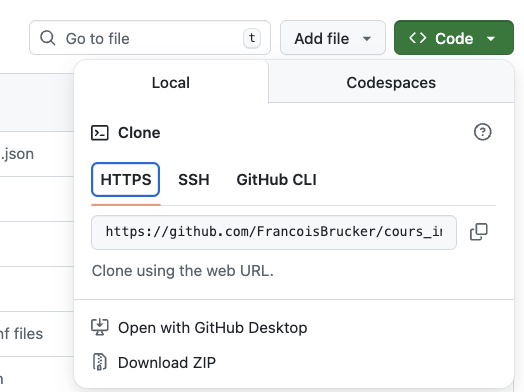
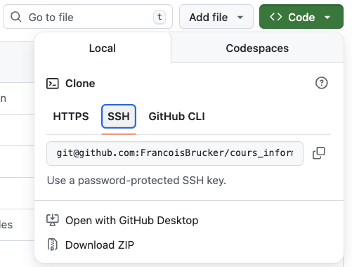

Authentification à github
Pour pouvoir effectuer des modifications sur l'origine (ici github) il faut pouvoir être identifié. Il existe deux façon de faire :
- via un web token
- via une clé ssh
L'accès à l'origin doit être authentifié. POur github cela peut prendre essentiellement deux formes :
- une authentification via un navigateur (web token)
- une authentification via une clé ssh
Vous pouvez le voir dans le fichier de configuration (qui est par défaut .git/config dans la racine de votre projet) quelle méthode est utilisée.
Web token
Correspond à un clone en utilisant la méthode https :

La partie du fichier de configuration .git/config dédié à l'origine est :
[remote "origin"]
url = https://github.com/FrancoisBrucker/cours_informatique.git
fetch = +refs/heads/*:refs/remotes/origin/*
A priori se fait tout seul si vous utilisez l'application.
TBD à étoffer voir sur préférence du projet.
Clés ssh
Correspond à un clone en utilisant la méthode ssh :

La partie du fichier de configuration .git/config dédié à l'origine est :
[remote "origin"]
url = git@github.com:FrancoisBrucker/cours_informatique.git
fetch = +refs/heads/*:refs/remotes/origin/*
Cette méthode est à utiliser de préférence. Elle nécessite plus de connaissance que le web token mais est largement utilisée et son utilisation dépasse de loin le seul cadre de la gestion des sources.